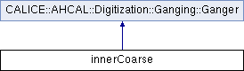

Implementation of ganger. More...
Inheritance diagram for innerCoarse:

Public Member Functions | |
| innerCoarse (ContributionMap *cm, float factor) | |
| bool | responsible (GeometricalIndices indices) |
| Implementations have to implement where in I/J they are responsible. | |
 Public Member Functions inherited from CALICE::AHCAL::Digitization::Ganging::Ganger Public Member Functions inherited from CALICE::AHCAL::Digitization::Ganging::Ganger | |
| Ganger (int cs, int off_I, int off_J, ContributionMap *cm, float factor) | |
| The Ganger is constructed with all information needed for a region to perform the ganging. | |
| bool | addHit (GeometricalIndices indices, SimCalorimeterHit *hit) |
| Function which return true if the ganger is responsible for this region and adds the hit to the ContributionMap. | |
| GeometricalIndices | coarsen (GeometricalIndices ijk) |
| Function which returns the ganged index according to the constants defined at construction. | |
| int | coarsenSingleIndex (int index, int offset) |
| Performs mapping from Mokka indices to ganged indices. More... | |
Detailed Description
Implementation of ganger.
Definition at line 83 of file ahcalGangingProcessor.cc.
The documentation for this class was generated from the following file: